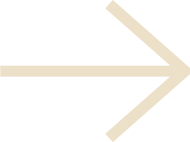

ABOUT
Hello all! My name is Johan, and this website is dedicated to
my love for homebrewing. Like so many others, the pandemic
restrictions made me seek out new past-time activities that
could be done from the comfort of my home.
I have always had a strong passion for beer, but it was not
until recently I actually took a shot at brewing my own.
this website is in its essence an overview of my home brew. I
hope you all will enjoy it, cheers!